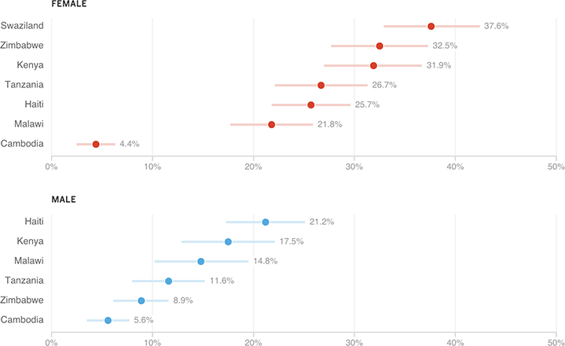

People Who Experienced Any Form Of Sexual Violence Before Age 18
Among respondents 18-to-24 years old

Notes
— Lighter bars indicate margin of error.
— Any sexual violence includes unwanted sexual touching, unwanted attempted sex, pressured/coerced sex, and forced sex
— All numbers represent weighted percentages.
— In Swaziland only girls were surveyed.